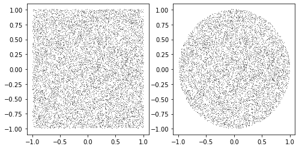
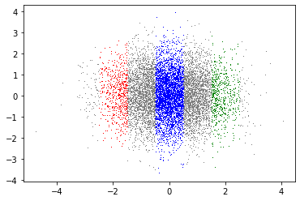
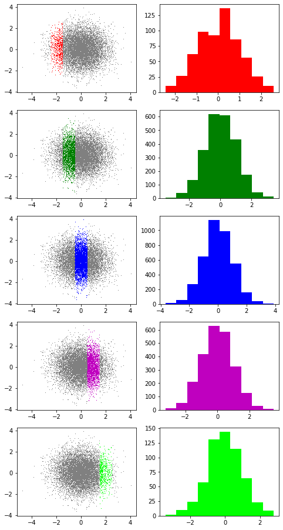
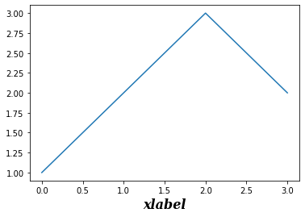

산점도 응용예제 4 (무상관과 독립), mpl의 미세먼지 팁 (1)
강의영상
https://youtube.com/playlist?list=PLQqh36zP38-zZsodh1GEp1w8cDYu_GFrl
imports
산점도 응용예제 4 (무상관과 독립)
예제자료
예시1: 사각형
예시2: 원
예시3: 이변량정규분포
상관계수
- 예시1, 예시2, 예시3의 산점도를 보고 상관계수가 얼마인지 예상해보라. 실제 계산결과와 확인하라.
독립
- 예시1,2,3 중 독립인것은 무엇인가?
- 예시1 vs 예시2
fig, ax = plt.subplots(1,2,figsize=(8,4))
ax[0].plot(x1,y1,',',color='gray')
ax[1].plot(x2,y2,',',color='gray')
- 예시3
g([-2.5,-1.5],[x3,y3],ax,col='r')
g([-0.5,+0.5],[x3,y3],ax,col='b')
g([+1.5,+2.5],[x3,y3],ax,col='g')
fig
fig,ax = plt.subplots(5,2,figsize=(8,16))
ax[0,0].plot(x3,y3,',',color='gray'); g([-2.5,-1.5],[x3,y3],ax[0,0],col='r')
ax[1,0].plot(x3,y3,',',color='gray'); g([-1.5,-0.5],[x3,y3],ax[1,0],col='g')
ax[2,0].plot(x3,y3,',',color='gray'); g([-0.5,+0.5],[x3,y3],ax[2,0],col='b')
ax[3,0].plot(x3,y3,',',color='gray'); g([+0.5,+1.5],[x3,y3],ax[3,0],col='m')
ax[4,0].plot(x3,y3,',',color='gray'); g([+1.5,+2.5],[x3,y3],ax[4,0],col='lime')
h([-2.5,-1.5],[x3,y3],ax[0,1],col='r')
h([-1.5,-0.5],[x3,y3],ax[1,1],col='g')
h([-0.5,+0.5],[x3,y3],ax[2,1],col='b')
h([+0.5,+1.5],[x3,y3],ax[3,1],col='m')
h([+1.5,+2.5],[x3,y3],ax[4,1],col='lime')
mpl에 대한 미세먼지 팁 (1)
그림만 보고 싶을때
marker size, line width
label + legend
색깔조정 (C0,C1,…)
title 설정
- (방법1)
plt.plot([1,2,3,4],[1,2,3,2],'--o',label='A',color='C1')
plt.plot([1,2,3,4],[3,2.1,1,3],'--o',label='B',color='C0')
plt.legend()
plt.title('title')Text(0.5, 1.0, 'title')
- (방법2)
suptitle 설정
fig, ax = plt.subplots(2,2)
ax[0,0].plot([1,2,3,2],'--o',label='A',color='C0')
ax[0,0].set_title('(a)')
ax[0,1].plot([3,2.1,1,3],'--o',label='B',color='C1')
ax[0,1].set_title('(b)')
ax[1,0].plot([-3,-2.1,-1,-3],'--o',label='B',color='C2')
ax[1,0].set_title('(c)')
ax[1,1].plot([3,-2.1,1,-3],'--o',label='B',color='C3')
ax[1,1].set_title('(d)')
#plt.suptitle('suptitle')
fig.suptitle('suptitle')Text(0.5, 0.98, 'suptitle')
tight_layout()
fig, ax, plt 소속
- 일단 그림 하나 그리고 이야기좀 해보자.
- fig에는 있고 ax에는 없는 것
add_axes, tight_layout, suptitle, …
- ax에는 있고 fig에는 없는 것
boxplot, hist, plot, set_title, …
- plt는 대부분 다 있음. (의미상 명확한건 대충 알아서 fig, ax에 접근해서 처리해준다)
- plt.tight_layout, plt.suptitle, plt.boxplot, plt.hist, plot.plot
- plt.set_title 은 없지만 plt.title 은 있음
- plt.add_axes 는 없음..
x축, y축 label 설정
ax.xaxis.set_label_text('xlabel',size=16,family='serif',weight=1000,style='italic')
#_fontsettings={'size':16,'family':'serif','weight'=1000,'style':'italic'}
#ax.xaxis.set_label_text('xlabel',_fontsettings)
fig
폰트ref - size: - fontweight: 0~1000 - family: ‘serif’, ‘sans-serif’, ‘monospace’ - style: ‘normal’, ‘italic’
숙제 (난이도 상) – 다음시간에 풀어줄거에요
아래와 같이 표준정규분포에서 100개의 난수를 생성하여 \(\boldsymbol{\epsilon}=(\epsilon_1,\epsilon_2,\dots,\epsilon_{100})\) 와 같은 벡터를 만들었다고 하자.
아래는 \((t,\epsilon_t)\)를 그린 그림이다. (단 \(t=1,2,\dots,100\))
(1) \(\epsilon_t\) 와 \(\epsilon_{t-1}\)은 독립이라고 보여지는가?
(2) 아래의 수식을 만족하는 벡터 \({\boldsymbol y} = (y_1,y_2,\dots, y_{100})\) 을 생성하라. (단 \(y_1=\epsilon_1\))
\[ y_t = y_{t-1} + \epsilon_t\]
(3) \((t,y_t)\)의 dot-connected plot을 그려라.
(4) \(y_t\)와 \(y_{t-1}\)은 독립이라고 볼 수 있는가?